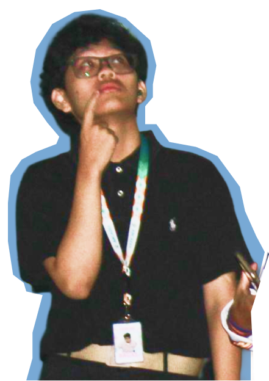
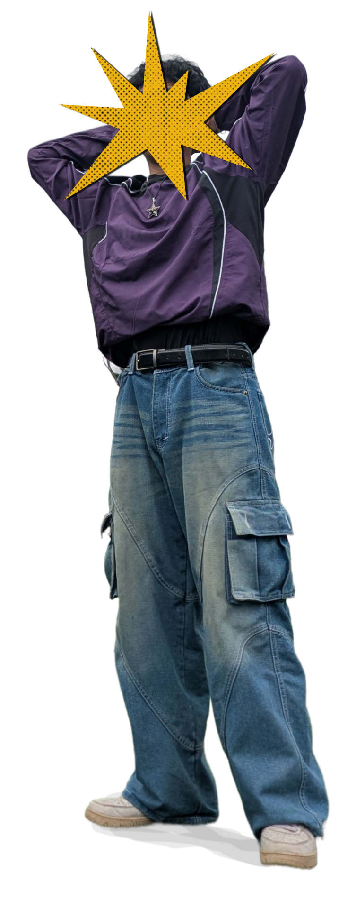

Bagas Satrio
Himawan
Mahasiswa S1 Sistem Informasi Universitas Negeri Semarang yang memiliki minat mendalam pada UI/UX Design, tata letak web minimalis, dan manajemen organisasi. Terbiasa menggabungkan cara berpikir analitis sistem dengan rasa ingin tahu tinggi dalam merancang antarmuka digital yang rapi dan nyaman digunakan.

Bagas Satrio Himawan
Teknologi • Desain • Komunitas
Tentang Saya
Mengenal lebih dekat latar belakang, filosofi belajar, dan hal-hal yang menjadi ketertarikan saya.
"Belajar menghubungkan sistem yang logis dengan antarmuka yang nyaman."
Halo! Nama saya Bagas Satrio Himawan, mahasiswa S1 Sistem Informasi Universitas Negeri Semarang (UNNES) angkatan 2024. Saya menempuh masa sekolah menengah atas di Jepara sebelum melanjutkan pendidikan tinggi di Semarang.
Di perkuliahan, saya mendalami perancangan sistem dan rekayasa web. Namun ketertarikan terbesar saya berada pada UI/UX Design. Saya senang mengeksplorasi pembuatan wireframe, alur interaksi pengguna yang logis, serta prinsip desain antarmuka yang rapi dan minimalis.
Visual & Digital Drawing
Menyalurkan kreativitas lewat ilustrasi digital dan eksplorasi bentuk visual yang ekspresif.
Cat Enthusiast
Penyayang kucing sejati yang selalu menemukan kesegaran pikiran dan hiburan dari tingkah lucu mereka.
Minimalist Layouts
Mengutamakan struktur tata letak yang bersih, hierarki tipografi tegas, dan bebas distraksi visual.
Doomscrolling Master
Selalu penasaran memantau tren desain terkini, interaksi digital, dan perkembangan industri teknologi.

Bagas Satrio Himawan
Sistem Informasi • Creative Explorer
Pendidikan & Studi
Langkah akademik yang membentuk logika berpikir analitis dan fondasi keilmuan teknologi saya.
Universitas Negeri Semarang
S1 Sistem Informasi • Jurusan Ilmu Komputer, Fakultas MIPA
Menempuh studi di bidang Sistem Informasi untuk mengintegrasikan proses bisnis, teknologi komputer, dan interaksi pengguna. Mempelajari rekayasa perangkat lunak, sistem basis data, pemrograman web, serta aktif mengeksplorasi antarmuka pengguna (UI/UX).
SMA Negeri 1 Jepara
Peminatan Matematika & Ilmu Pengetahuan Alam (MIPA)
Menyelesaikan pendidikan menengah atas dengan fokus pada logika analitis, pemecahan masalah matematis, serta ketertarikan awal pada seni visual dan kreativitas digital.
ORGANIZATION EXPERIENCES
KOORDINATOR SIE. BENDAHARA & KONSUMSI
- ✦ Mengelola alokasi anggaran operasional dan menyusun Rancangan Anggaran Biaya secara akurat untuk mendukung seluruh kebutuhan rangkaian kegiatan.
- ✦ Berkoordinasi dengan katering atau vendor konsumsi serta mengawasi alur distribusi makanan tepat waktu bagi seluruh peserta dan panitia.
- ✦ Menyusun Laporan Pertanggungjawaban keuangan yang transparan dan akuntabel pasca-kegiatan selesai.
KOORDINATOR SIE. PERKAP
- ✦ Memimpin pengadaan dan pendataan seluruh kebutuhan logistik serta perlengkapan kegiatan bakti sosial.
- ✦ Berkoordinasi langsung dengan pihak terkait mengenai tata letak area dan fasilitas teknis guna memastikan acara berlangsung aman dan nyaman.
- ✦ Mengawasi mobilisasi dan demobilisasi barang untuk meminimalisir risiko kerusakan atau kehilangan aset perlengkapan.
STAFF AHLI SIE. PERKAP
- ✦ Memberikan supervisi dan arahan teknis kepada tim perkap dalam penyiapan panggung, tata suara, dan tata letak area untuk acara skala besar.
- ✦ Merancang mitigasi risiko kendala teknis perlengkapan di lapangan serta merespons cepat kebutuhan darurat selama acara berlangsung.
- ✦ Mengoptimalkan efisiensi penggunaan alat dan pemeliharaan aset inventaris organisasi agar siap digunakan secara maksimal.
KOORDINATOR SIE. BENDAHARA & KONSUMSI
- ✦ Mengatur arus kas dan efisiensi dana untuk memenuhi kebutuhan media pembelajaran, transportasi, dan konsumsi tim pengajar.
- ✦ Merancang skema penyediaan konsumsi harian yang fleksibel dan tepat waktu bagi seluruh panitia serta pihak penerima program.
- ✦ Pencatatan transaksi secara real-time untuk menjamin transparansi dan kerapian pelaporan keuangan program pengabdian.
KOORDINATOR SIE. TICKETING
- ✦ Mengelola sistem penjualan dan pendistribusian tiket secara langsung maupun prasandang yang berhasil menarik ratusan pengunjung.
- ✦ Mengkoordinasikan alur registrasi dan validasi tiket di area pintu masuk untuk mencegah penumpukan antrean pengunjung.
- ✦ Melakukan rekonsiliasi data penjualan tiket secara presisi bersama tim bendahara untuk memastikan kesesuaian pendataan pemasukan acara.
Keahlian & Minat
Perpaduan antara minat eksplorasi desain antarmuka, fondasi teknologi web, dan pengalaman kepemimpinan lapangan.
Minat UI/UX & Desain
Alat visual dan eksplorasi yang sedang saya tekuni untuk merancang antarmuka terstruktur.
- Figma (Wireframing & Prototyping)
- Canva (Visual & Konten Grafis)
- Pinterest Moodboarding
- Minimalist Layout Exploration
- Digital Drawing & Sketsa
Manajemen Acara
Pengalaman memimpin divisi strategis di 5 kepanitiaan acara kampus tahun 2025.
- RAB & Laporan Pertanggungjawaban
- Manajemen Logistik & Perkap
- Operasional & Validasi Ticketing
- Koordinasi Vendor & Fasilitas
- Mitigasi Kendala Lapangan
Soft Skills
Karakter personal yang mendukung kerja sama tim dan penyelesaian tanggung jawab secara solid.
- Kerja Sama Tim yang Adaptif
- Komunikasi & Negosiasi
- Kerapian & Detail-Oriented
- Keterbukaan terhadap Masukan
- Keinginan Belajar yang Tinggi
Mari Berkolaborasi!
Ingin berdiskusi seputar sistem informasi, eksplorasi UI/UX, atau mengajak kerja sama kepanitiaan? Pintu selalu terbuka.
Surel / Email
Silakan hubungi melalui surel untuk pertanyaan, diskusi, atau keperluan kerja sama. Biasanya membalas dalam waktu 1x24 jam.